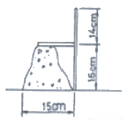
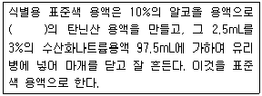

콘크리트기능사 (2007-01-28 기출문제)
1과목: 콘크리트재료
1. 콘크리트를 배합할 때 골재의 1회 계량분에 대한 최대 허용 오차는?
- 1%
- 2%
- 3%
- 5%
(정답률: 78%)

2. 다음 중 골재의 흡수량에 대한 설명이 옳은 것은?
- 골재입자의 표면에 묻어 있는 물의 양
- 절대건조상태에서 표면건조 포화상태로 되기까지 흡수된 물의 양
- 공기중 건조상태에서 표면건조 포화상태로 되기까지 흡수된 물의 양
- 골재입자 안팎에 들어 있는 모든 물의 양
(정답률: 62%)
3. 콘크리트용 골재에 대한 설명으로 옳지 않은 것은?
- 굵은골재중의 연한 석편은 질량백분율로 5% 이하라야 한다.
- 굵은골재중의 점토덩어리 함유량은 질량백분율로 0.25% 이하라야 한다.
- 굵은골재로서 사용할 자갈의 흡수율은 5% 이하의 값을 표준으로 한다.
- 잔골재중의 점토덩어리 함유량은 질량백분율로 1% 이하라야 한다.
(정답률: 45%)
4. 골재의 단위 용적 질양이 1.6t/m3이고 밀도가 2.6g/cm3일때 이 골재의 공극률은?
- 16.25%
- 38.46%
- 42.84%
- 61.54%
(정답률: 43%)
5. 골재의 저장 방법에 대한 설명으로 틀린 것은?
- 잔골재, 굵은골재 및 종류와 입도가 다른 골재는 서로 섞어 균질한 골재가 되도록 하여 저장한다.
- 먼지나 잡물 등이 섞이지 않도록 한다.
- 골재의 저장 설비에는 알맞은 배수 시설을 한다.
- 골재는 햇빛을 바로 쬐지 않도록 알맞은 시설을 갖추어야 한다.
(정답률: 81%)
6. 시멘트의 응결에 대한 설명 중 잘못된 것은?
- 물-시멘트비가 높으면 응결이 늦다.
- 풍화되었을 경우에는 응결이 늦다.
- 온도가 높으면 응결이 늦다.
- 분말도가 낮을 때는 응결이 늦다.
(정답률: 63%)
7. 고로 시멘트의 특성으로 옳지 않은 것은?
- 건조수축은 약간 크다.
- 바닷물에 대한 저항이 크다.
- 콘크리트의 블리딩이 적어진다.
- 조기 강도가 크다.
(정답률: 55%)
8. 시멘트의 분말도가 높을 경우에 대한 설명 중 옳지 않은 것은?
- 콘크리트의 조기강도가 크다.
- 콘크리트의 내구성이 좋다.
- 콘크리트의 작업이 용이하다.
- 콘크리트에 균열이 생길 가능성이 많다.
(정답률: 32%)
9. 다음 혼화재 중 인공산인 것은?
- 플라이애시
- 화산회
- 규조토
- 규산백토
(정답률: 80%)
10. 다음 혼화재료 중 그 사용량이 시멘트 무게의 5%정도 이이 되어 그 자체의 양이 콘크리트의 배합 계산에 관계되 혼화재는?
- 고로슬래그
- AE제
- 염화칼슘
- 기포제
(정답률: 68%)
11. 시멘트의 성분 중에서 석고를 사용하는 목적은?
- 압축강도를 증진하기 위하여
- 부착력을 증진하기 위하여
- 반죽질기를 조절하기 위하여
- 굳는 속도를 늦추기 위하여
(정답률: 62%)
12. 알루미늄 또는 아연가루를 넣어, 시멘트가 응결할 때 수가스를 발생시켜 모르타르 또는 콘크리트 속에 아주 작은 기포를 생기게 하는 혼화제는?
- 지연제
- 발포제
- 팽창재
- AE제
(정답률: 80%)
13. 콘크리트 골재로서 경량 골재로 사용하는 것은?
- 자철석
- 팽창성 혈암
- 중정석
- 강자갈
(정답률: 49%)
14. 수화열이 적고, 건조수축이 작으며, 장기강도가 커서 댐과 같은 매스콘크리트, 방사선 차폐용, 지하 구조물, 도로포장용, 서중 콘크리트 공사 등에 쓰이는 시멘트는?
- 보통 포틀랜드 시멘트
- 중용열 포틀랜드 시멘트
- 조강 포틀랜드 시멘트
- 내황산염 포틀랜드 시멘트
(정답률: 79%)
15. 콘크리트에서 부순돌을 굵은 골재로 사용했을 때의 설명이다. 잘못된 것은?
- 일반골재를 사용한 콘크리트와 동일한 워커빌리티의 콘크리트를 얻기 위해 단위수량이 많아진다.
- 일반골재를 사용한 콘크리트와 동일한 워커빌리티의 콘크리트를 얻기 위해 잔골재율이 작아진다.
- 일반골재를 사용한 콘크리트 보다 시멘트 페이스트와의 부착이 좋다.
- 포장 콘크리트에 사용하면 좋다.
(정답률: 63%)
16. 콘크리트 작업 중의 재료분리에 대한 설명으로 잘못된 것은?
- 콘크리트는 비중이 다른 재료들을 물로 비벼서 만든 것이기 때문에 재료가 분리되기 쉽다.
- 굵은 골재의 최대치수가 클수록 재료 분리가 감소한다.
- 잔골재율을 증가시키면 재료분리를 적게하는데 유효하다.
- 골재량과 물의 양이 너무 많으면 재료가 분리되기 쉽다.
(정답률: 43%)
17. 다음 중 콘크리트의 배합설계에서 제일 먼저 결정해야 한는 것은?
- 물-시멘트비
- 배합 강도
- 단위수량
- 단위 골재량
(정답률: 28%)
18. 조기 강도가 커서 긴급 공사나 한중 콘크리트에 알맞은 시멘트는?
- 중용열 포틀랜드 시멘트
- 알루미나 시멘트
- 고로 슬래그 시멘트
- 팽창 시멘트
(정답률: 78%)
19. 골재의 함수 상태에서 공기 중에서 자연 건조시킨 것으로서, 골재알 속의 빈 틈 일부가 물로 차 있는 상태는?
- 절대 건조 포화 상태
- 공기 중 건조상태
- 표면 건조 포화상태
- 습윤 상태
(정답률: 74%)
20. 시멘트의 입자를 분산시켜 콘크리트의 단위 수량을 감소시키는 혼화제는?
- AE제
- 지연제
- 촉진제
- 감수제
(정답률: 72%)
2과목: 콘크리트시공
21. 가경식 믹서를 사용하여 콘크리트 비비기를 할 경우 비비기 시간은 믹서 안에 재료를 투입한 후 얼마 이상을 표준으로 하는가?
- 1분
- 30초
- 1분 30초
- 2분
(정답률: 89%)
22. A.E콘크리트의 가장 적당한 공기량은 콘크리트 부피의 얼마 정도인가?
- 1~3%
- 4~7%
- 8~12%
- 12~15%
(정답률: 64%)
23. 콘크리트의 배합에 관한 설명으로 옳은 것은?
- 사용하는 각 재료의 비율은 부피비로 나타낸다.
- 물의 양은 작업의 난이도에 따라 결정한다.
- 현장 배합을 기준으로 시방 배합을 정한다.
- 잔골재량의 전체 골재량에 대한 절대부피비를 백분율로 나타낸 것을 잔골재율이라고 한다.
(정답률: 57%)
24. 콘크리트의 시방배합을 현장배합으로 고칠 때 단위량이 변하지 않는 것은?
- 단위 수량
- 단위 잔골재량
- 단위 굵은 골재량
- 단위 시멘트량
(정답률: 42%)
25. 콘크리트의 배합설계를 할 때 고려하여야 할 사항으로 적당하지 않은 것은?
- 골재는 표면건조 포화상태로 한다.
- 가능한 한 단위수량을 적게 한다.
- 굵은골재는 될수록 작은 치수의 것을 사용한다.
- 배합은 충분한 내구성과 강도를 가지도록 한다.
(정답률: 59%)
26. 콘크리트의 다지기에 있어서 내부진동기를 사용할 경우 아래층의 콘크리트속에 몇 cm정도 찔러 넣어야 하는가?
- 5cm
- 10cm
- 15cm
- 20cm
(정답률: 69%)
27. 콘크리트 치기에 대한 설명으로 옳지 않은 것은?
- 철근의 배치가 흐트러지지 않도록 주의해야 한다.
- 거푸집안에 투입한 후 이동시킬 필요가 없도록 해야 한다.
- 2층 이상으로 쳐 넣을 경우 아래층이 굳은 다음 윗층을 쳐야 한다.
- 높은 곳을 연속해서 쳐야 할 경우 반죽질기 및 속도를 조정해야 한다.
(정답률: 75%)
28. 일반적인 공장 제품 콘크리트의 강도는 보통 재령 며칠의 압축강도를 기준으로 하는가?
- 7일
- 14일
- 28일
- 91일
(정답률: 22%)
29. 일반적인 수중콘크리트의 단위시멘트량의 표준은 얼마 이상인가?
- 370kg/m3
- 300kg/m3
- 250kg/m3
- 200kg/m3
(정답률: 71%)
30. 한중 콘크리트에 관한 다음 설명 중에서 올바르지 못한 사항은?
- 1일 평균 기온이 4℃ 이하가 되는 기상조건 하에서는 한중콘크리트로서 시공한다.
- 한중 콘크리트를 시공할 때에는 물과 시멘트를 가열한 다음 혼합하여 콘크리트를 타설한다.
- 타설할 때의 콘크리트 온도는 구조물의 단면치수, 기상조건 등을 고려하여 5~20℃의 범위에서 정한다.
- 콘크리트 타설이 완료된 후 초기동해를 받지 않도록 초기양생을 실시한다.
(정답률: 67%)
31. 콘크리트 각 재료의 양을 계량할 때 반죽질기, 워커빌리티, 강도 등에 직접 영향을 끼치므로 특히 정확하게 계량해야 하는 재료는?
- 혼화재
- 물
- 잔골재
- 굵은골재
(정답률: 77%)
32. 일반 콘크리트에서 콘크리트는 신속하게 운반하여 즉시 타설하고, 충분히 다져야 한다. 이 때 비비기로부터 타설이 끝날때까지의 시간은 얼마 이내로 하여야 하는가? (단, 외기온도가 25℃이상인 경우)
- 30분
- 1시간
- 1시간 30분
- 2시간
(정답률: 61%)
33. 다음 중 콘크리트의 운반 기구 및 기계가 아닌 것은?
- 버킷
- 콘크리트 펌프
- 콘크리트 플랜트
- 벨트 컨베이어
(정답률: 71%)
34. 특수 콘크리트의 시공법 중에서 해양 콘크리트에 대한 설명으로 잘못된 것은?
- 단위 시멘트량은 280~330kg/m3이상으로 한다.
- 일반 현장시공의 경우 최대 물-시멘트 비는 45~50%로 한다.
- 해양구조물에서는 성능 저하를 방지하기 위하여 시공이응을 만들어야 한다.
- 보통포틀랜드시멘트를 사용한 콘크리트는 재령 5일이 되기까지 바닷물에 씻기지 않도록 보호해야 한다.
(정답률: 46%)
35. 용량 0.75m3인 믹서 2대로 된 중력식 콘크리트 플랜트의 시간당 생산량을 구하면? (단, 작업효율(E)=0.8, 사이클 시간(Cm)=4min으로 한다.)
- 14m3/h
- 16m3/h
- 18m3/h
- 20m3/h
(정답률: 53%)
36. 콘크리트 표면을 물에 적신 가마니, 마포 등으로 덮는 양생 방법은?
- 수중양생
- 오토클레이브양생
- 피막양생
- 습윤양생
(정답률: 44%)
37. 일반 콘크리트를 펌프로 압송 할 경우, 슬럼프 값은 0범위가 가장 적당한가?(오류 신고가 접수된 문제입니다. 반드시 정답과 해설을 확인하시기 바랍니다.)
- 5~8cm
- 8~10cm
- 10~18cm
- 20~25cm
(정답률: 45%)
38. 콘크리트를 일관 작업으로 대량 생산하는 장치로서, 자저장부, 계량 장치, 비비기 장치, 배출 장치로 되어있는 것은?
- 레미콘
- 콘크리트 플랜트
- 콘크리트 피니셔
- 콘크리트 디스트리뷰터
(정답률: 53%)
39. 물-시멘트비(W/C)가 50%, 단위수량이 170kg/m3일 때 시멘트량은 얼마인가?
- 210kg/m3
- 300kg/m3
- 340kg/m3
- 420kg/m3
(정답률: 81%)
40. 콘크리트 칠 때 슈트, 버킷, 호퍼 등의 배출구로부터 면까지의 높이는 최대 얼마 이하를 원칙으로 하는가?
- 0.5m
- 1.0m
- 1.5m
- 2.0m
(정답률: 54%)
3과목: 콘크리트 재료시험
41. 콘크리트의 슬럼프 시험을 하였다. 슬럼프 콘을 뺀 후의 형상이 아래 그림과 같았을 때 측정척을 콘크리트의 표에 일치시킨 것이다. 이때 슬럼프 값은 얼마인가?

- 2cm
- 14cm
- 15cm
- 16cm
(정답률: 51%)
42. 굳지 않은 콘크리트의 워커빌리티를 측정하는 시험법으로 틀린 것은?
- 슬럼프 시험
- 플로(flow) 시험
- 공기 함유량 시험
- 구관입 시험
(정답률: 37%)
43. 블리딩 시험을 수행할 때 유지되어야 하는 시험실의 온도로써 가장 적당한 것은?
- 10± 3℃
- 14± 3℃
- 20± 3℃
- 26± 3℃
(정답률: 78%)
44. 골재의 체가름 시험에 사용하는 저울을 어느 정도의 정밀도를 가진 것이 필요한가?
- 최소측정 값이 1g인 정밀도를 가진 것
- 최소측정 값이 0.1g인 정밀도를 가진 것
- 시료질량의 1%이상인 눈금량 또는 감량을 가진 것
- 시료질량의 0.1%이하의 눈금량 또는 감량을 가진 것
(정답률: 37%)
45. 골재 마모시험 방법 중 로스엔젤레스 마모시험기에 의해 마모시험을 한 경우 잔량 및 통과량을 결정하는 체는?
- 5mm체
- 2.5mm체
- 1.7mm체
- 1.2mm체
(정답률: 66%)
46. 콘크리트용 모래에 포함되어 있는 유기불순을 시험에 필요한 식별용 표준색 용액을 제조하는 경우에 대한 아래표의 내용 중 ( )에 적합한 것은?

- 1%
- 2%
- 3%
- 5%
(정답률: 51%)
47. 콘크리트 압축강도 시험을 실시하였을 때 최대 하중값이 44200kg이고 공시체의 지름이 15cm, 높이가 30cm였다. 압축강도는 약 몇 kg/cm2인가?
- 245
- 250
- 255
- 260
(정답률: 48%)
48. 콘크리트의 인장강도에 대한 설명 중 틀린 것은?
- 인장강도는 압축강도에 비해 매우 작다.
- 인장강도는 철근 콘크리트의 부재 설계에서는 일반적으로 무시해도 된다.
- 인장강도는 도로포장이나 수조 등에선 중요하다.
- 인장강도는 압축강도와 달리 물-시멘트비에 비례한다.
(정답률: 38%)
49. 공시체가 지간의 3등분 중앙에서 파괴도었을 때 휨강도는 약 얼마인가? (단, 지간 45cm, 파괴단면의 폭 15cm, 파괴단면높이 15cm, 최대하중이 2.5t이다.)
- 27.33kg/cm2
- 30.33kg/cm2
- 33.33kg/cm2
- 47.33kg/cm2
(정답률: 58%)
50. 콘크리트 휨강도 시험용 공시체 규격으로 옳은 것은?
- ø10cm×20cm
- ø15cm×30cm
- 10cm×10cm×30cm
- 15cm×15cm×53cm
(정답률: 56%)
51. 굳지 않은 콘크리트의 공기량 측정법이 아닌 것은?
- 공기실 압력법
- 부피법
- 계산법
- 무게법
(정답률: 69%)
52. 콘크리트 압축강도 시험에 사용되는 공시체의 지름은 굵은 골재 최대치수의 최소 몇배 이상이어야 하는가?
- 2배
- 3배
- 4배
- 5배
(정답률: 70%)
53. 콘크리트의 공기량을 구하는 식으로 옳은 것은?
- (겉보기 공기량 - 골재의 수정계수) × 100
- 겉보기 공기량 + 골재의 수정계수
- 겉보기 공기량 - 골재의 수정계수
- (겉보기 공기량 + 골재의 수정계수) × 100
(정답률: 55%)
54. 골재의 안정성 시험에 사용되는 시험용 용액은?
- 염화칼슘
- 가성소다
- 황산나트륨
- 탄닌산
(정답률: 82%)
55. 콘크리트 배합설계에서 단위 시멘트량이 380kg/m3, 물은 180kg/m3, 갇힌 공기량은 2% 이었다. 단위골재량의 절대 부피는 얼마인가? (단, 시멘트 비중은 3.14이다.)
- 0.542m3
- 0.480m3
- 0.679m3
- 0.854m3
(정답률: 45%)
56. 일반적으로 콘크리트의 압축강도는 재령 며칠의 강도를 설계 표준으로 하는가?
- 28일
- 91일
- 7일
- 1일
(정답률: 75%)
57. 콘크리트 강도 측정용 공시체는 어떤 상대에서 시험을 하는가?
- 절대 건조상태
- 기건상태
- 표면건조 포화상태
- 습윤상태
(정답률: 30%)
58. 시방배합에서 단위 잔골재량이 720kg/m3이다. 현장 골재의 시험에서 표면수량이 1%라면 현장 배합으로 보정된 잔골재량은?
- 727.2kg/m3
- 712.8kg/m3
- 722.4kg/m3
- 720.1kg/m3
(정답률: 47%)
59. 굳지 않은 콘크리트의 블리딩(bleeding)시험에서 블리딩 물의 양이 80cm3, 콘크리트의 윗 면적이 490cm2일 때 블리딩량(cm3/cm2)을 구하면?
- 0.142
- 0.163
- 0.327
- 0.392
(정답률: 48%)
60. 모르타르에서 물이 분리되어 올라오는 현상을 무엇이라 하는가?
- 워커빌리티
- 피니셔 빌리티
- 신축이음
- 블리딩
(정답률: 79%)